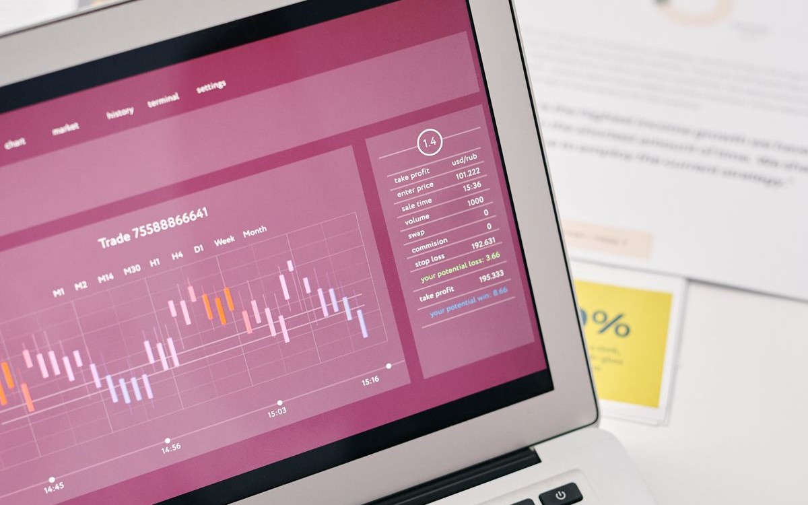
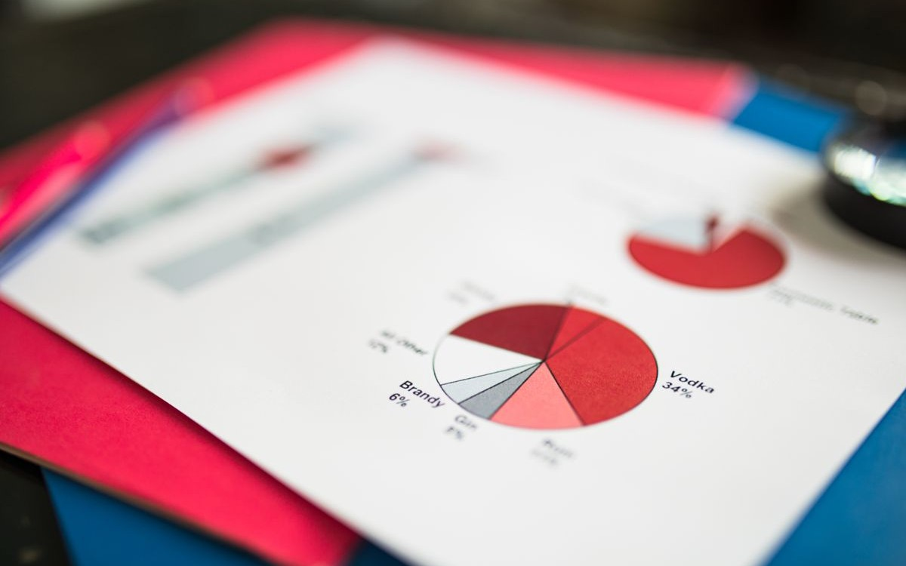

My Recent Work
Projects.
A few recent projects, with links to the code and live dashboards where available.

Customer Complaints in US Banking
Analyzed customer complaints in the American banking sector using Excel. Focused on complaint trends, response times, and company resolution rates, presented through a fully interactive dashboard.
#Excel
#PivotTables
#InteractiveDashboard
View on GitHub
Vehicle Theft Analysis — New Zealand
Explored seven months of stolen vehicle data from the NZ police Vehicle of Interest database. Identified theft patterns and delivered actionable insights for law enforcement.
#MySQL
#Tableau

House Price Prediction Model
Built a supervised machine learning model to predict housing prices based on area, number of rooms, and location, under mentor guidance.
#Python
#Scikit-learn

Loan Approval Prediction Model
Developed a classification model to predict loan approval based on applicant income, employment status, and credit history.
#Python
#Classification